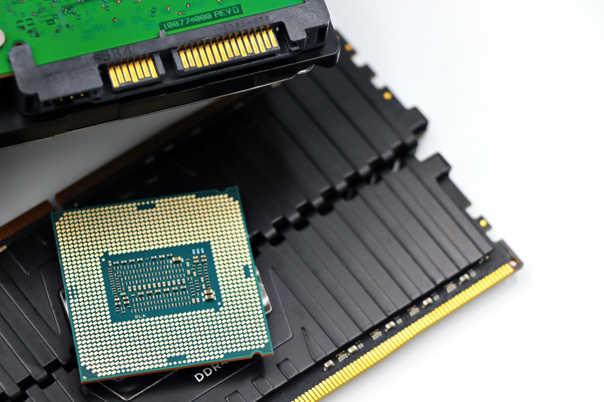

AI 반도체 풀스택 전략, 메모리 강점 위에 설계 역량이 없다

2025년 10월 '한국의 반도체산업 발전 전략 포럼'이 국회에서 개최됐다. 이 포럼은 AI 반도체를 단순 부품이 아닌 '풀스택(HBM+PIM 메모리·NPU 로직+패키징)' 관점에서 한국의 경쟁력을 점검했다. 현재 SK하이닉스는 HBM3E 글로벌 시장 점유율 53%를 기록 중이며, 삼성전자는 HBM3E 양산에서 약 6개월 뒤처진 상태다.
AI 서버용 메모리 수요는 2025년 기준 전체 DRAM 수요의 약 38%를 차지하며, 2027년까지 55%를 초과할 것으로 가트너가 전망했다. 그러나 HBM 단가 마진은 엔비디아·AMD 같은 AI 로직칩 설계사가 결정한다. HBM 가격 협상에서 SK하이닉스·삼성전자는 '가격 수용자(price taker)' 위치에 놓여 있다.
국내 NPU(신경망처리장치) 팹리스 생태계는 리벨리온·퓨리오사AI 2개사가 유일하게 글로벌 벤치마크 수준에 근접한다. 리벨리온의 REBEL 칩은 2024년 MLPerf에서 추론 성능 부문 TOP10에 진입했으나, 기업가치는 엔비디아의 0.1% 수준이다. 팹리스 생태계 육성 없이 메모리만으로는 AI 공급망의 부가가치 상위 70%를 가져갈 수 없다.
산업은행이 2025년 첨단산업 지원 규모를 전년 대비 40% 확대해 총 8조 원 이상을 배정했다. 그러나 이 자금의 70% 이상은 파운드리·패키징 설비 투자에 집중돼 있으며, 팹리스 설계 생태계 지원 비중은 5% 미만이다. 설계 역량 없이 제조만 키우는 투자 구조가 풀스택 전략의 구조적 빈틈이다.
한국의 AI 반도체 풀스택 전략 논의가 국회 포럼 수준에 머무는 동안, 미국은 CHIPS법 시행 2년 만에 인텔·마이크론 팹 착공과 동시에 아이언우드·그로크 같은 스타트업 AI칩 설계사에 SBIR 자금을 투입하고 있다. 제조와 설계를 동시에 육성하는 구조다.
한국이 HBM에서 가격 결정권을 갖지 못하는 근본 이유는 '누가 HBM을 얼마나 쓸지'를 결정하는 로직칩 설계사가 미국에 집중되어 있기 때문이다. 엔비디아 GB200 NVL72 시스템 한 대에 탑재되는 HBM3E는 SK하이닉스 공급 기준이지만, 탑재 물량과 규격은 엔비디아가 결정한다. 이 구조가 바뀌지 않으면 메모리 점유율 1위가 곧 수익 1위를 의미하지 않는다.
리벨리온·퓨리오사AI는 풀스택 전략 논의가 구체화될수록 정부 R&D 자금 수혜가 확대된다. 특히 리벨리온은 KT·SKT와 AI 추론 서버 실증 계약을 체결한 상태여서 국내 레퍼런스를 기반으로 글로벌 진출이 현실적이다.
TSMC 코파키징(CoWoS) 방식의 대안으로 삼성전자의 I-Cube·X-Cube 패키징 기술이 주목받고 있다. 패키징 내재화에 성공하면 HBM+로직 통합 공급 역량이 생겨 가격 협상력이 높아진다.
팹리스 설계 생태계 투자 비중이 5% 미만인 현 산업은행 지원 구조가 유지될 경우, 한국 NPU 스타트업은 시리즈B 이후 미국·유럽 VC에 의존하게 된다. 이는 기술 유출 리스크와 함께 핵심 IP의 해외 이전으로 이어질 수 있다.
메모리 의존 수익 구조에서 HBM 단가가 2026년 공급 과잉으로 15~20% 하락할 경우(트렌드포스 2025년 10월 전망), SK하이닉스·삼성전자의 AI부문 영업이익은 로직칩 없이 직접 타격을 받는다.
팹리스 생태계 투자는 제조 투자와 달리 '2~3년 후 ROI'가 측정되지 않아 정부 예산 배정에서 후순위로 밀린다. 이를 해결하려면 미국 DARPA 방식의 '성과 연동 계약(outcome-based contract)'을 산업부 R&D에 도입해야 한다. 팹리스 IP가 양산 단계에 진입하면 정부가 로열티 수익 일부를 환수하는 구조가 효과적이다.
투자자는 HBM 단가 하락 리스크를 헤지하기 위해 AI 추론칩 팹리스 + 패키징 복합 역량 보유 기업에 비중을 분산할 필요가 있다. 리벨리온의 기업가치는 2024년 말 기준 약 5,000억 원으로, 동급 미국 팹리스 대비 3~5배 저평가 상태다.
실제 조달 현장에서는 — 엔비디아·AMD의 HBM 발주 창구가 2024년부터 'HBM 단독'이 아닌 'HBM+패키징 통합 공급 가능 여부'를 RFQ에 명시하기 시작했다. 단순 메모리 공급사로는 차기 세대 AI 가속기 공급망에 진입하기 어려워지는 신호다. 패키징 내재화 투자가 없는 메모리 기업은 2027년 이후 수주 구조에서 열위에 놓인다.
이 포스팅은 쿠팡 파트너스 활동의 일환으로 수수료를 제공받습니다.